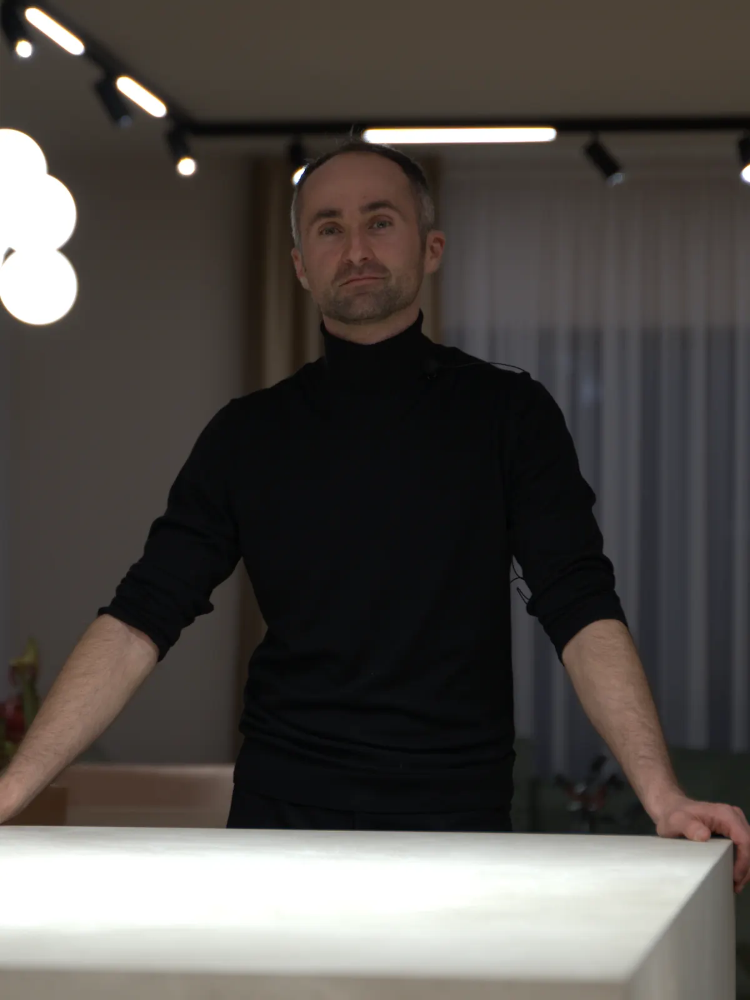
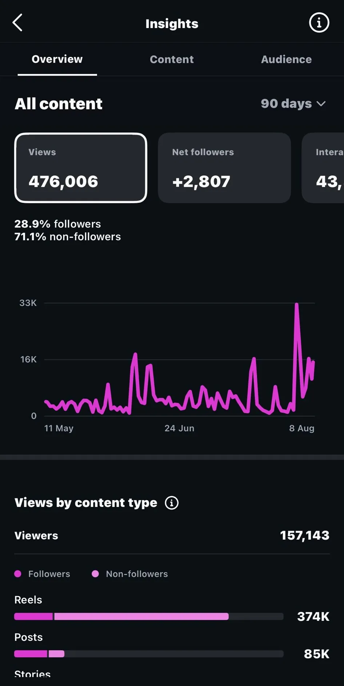
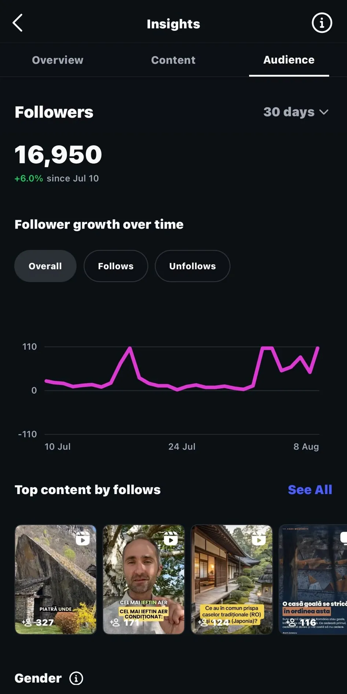
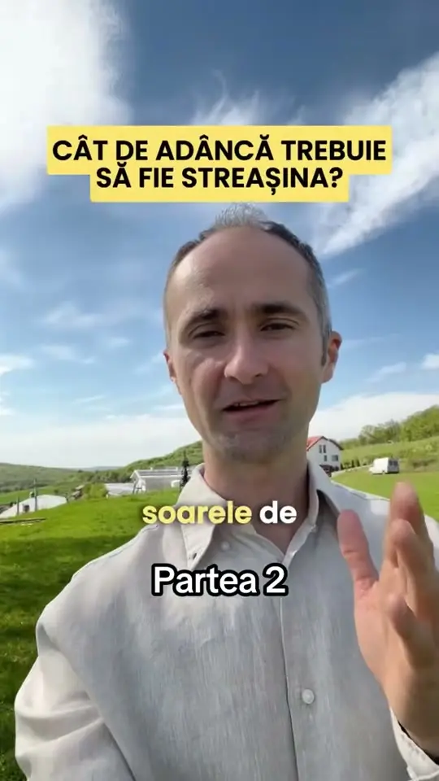
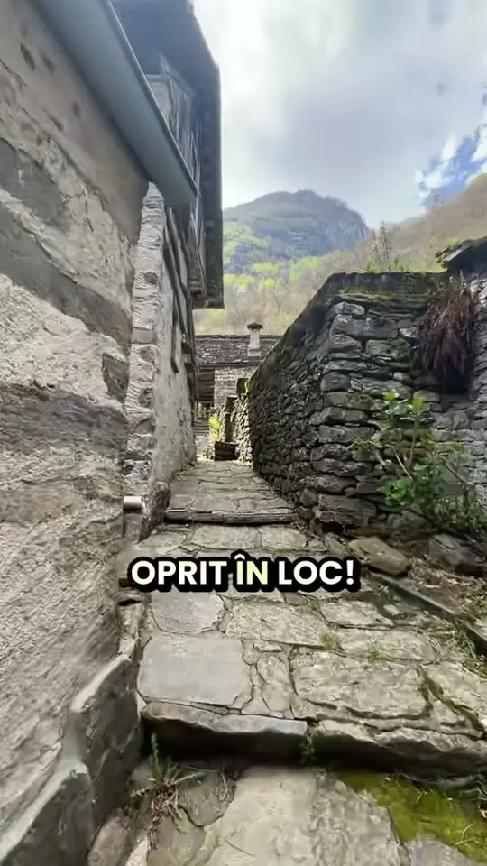
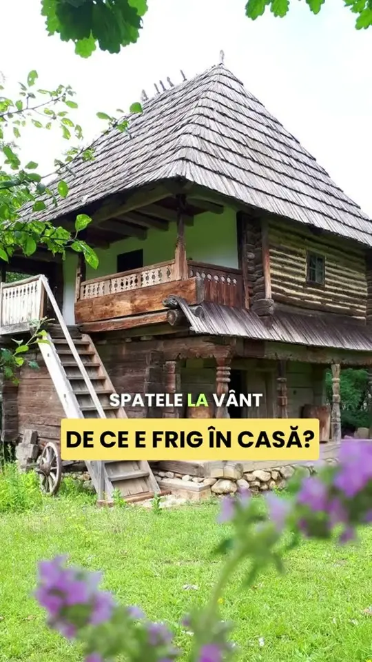
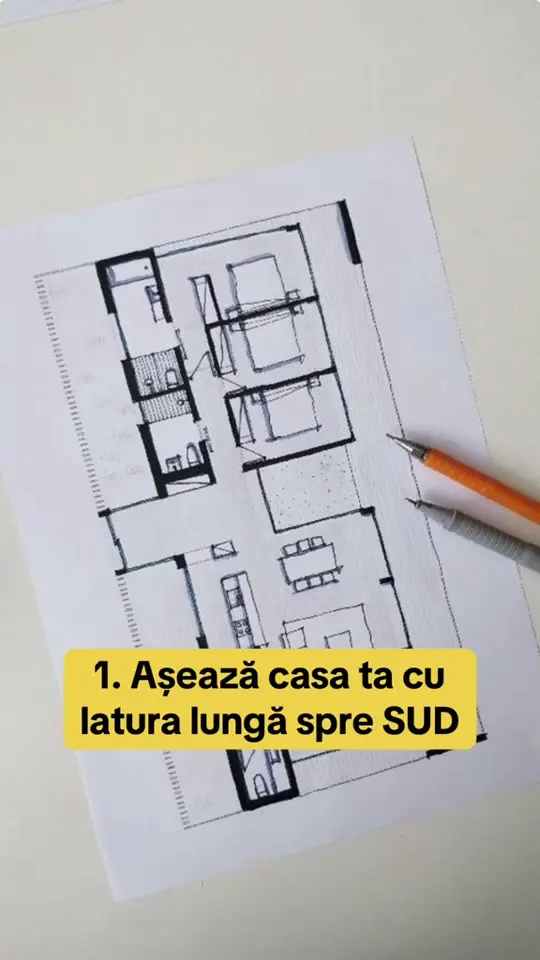
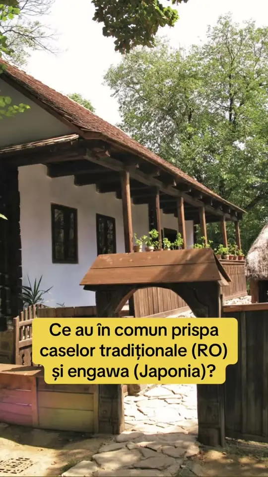
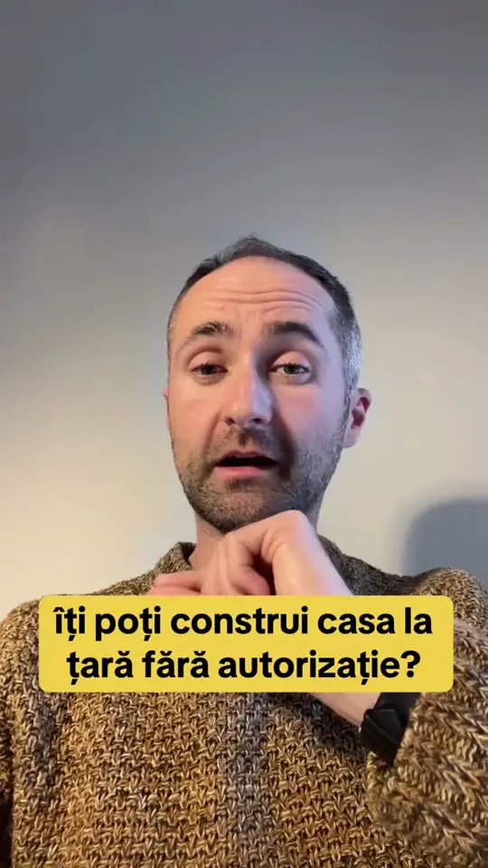
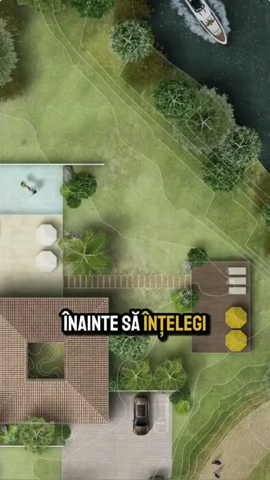

Zeci de mii de oameni care își construiesc casa.
Sunt arhitect și le explic, zi de zi, ce să pună în casa aia. Când produsul tău e răspunsul corect la o întrebare pe care și-o pun oricum, nu mai e reclamă. E recomandare.
- 476.006vizionări pe Instagram, ultimele 90 de zile
- 154.900+vizionări, campania NovingAIR
- 170+broșuri cerute de oameni reali
- PHI ✓certificare casă pasivă, Darmstadt
Explic case, zi de zi. Oamenii care se uită chiar construiesc, și înainte să cumpere ceva, întreabă un arhitect. Dacă produsul tău e răspunsul corect, îl recomand.
arh. Alin Ionescu
O casă reală, desfăcută pe etaje.
Proiect Inhabit Studio. Fiecare nivel ascunde categoriile lui de parteneriat, și doar una e luată.
- Acoperiș
- Mansardă
- Parter
Dovada
Campania NovingAIR. O lună, douăsprezece materiale.
Zece clipuri, un carusel și o broșură despre ventilația cu recuperare de căldură. Uite ce a ieșit.
Vizibilitate imediată 154.900+ vizionări însumate pe toate canalele, în 26 de zile.
- 360+comentarii organice, conversație reală sub clipuri
- 3.700+interacțiuni totale pe conținutul campaniei
broșuri cerute și trimise către oameni interesați
Cele 170+ de broșuri sunt cel mai cald semnal din campanie. Fiecare e un om care a făcut un pas activ, a cerut materialul și și-a lăsat contactul. Nu vizualizare pasivă, ci intenție.
Raportul complet
Cine sunt
Arhitect. Și omul pe care îl întreabă înainte să toarne placa.
- Nișa
- Oameni interesați de construcții eficiente energetic. Nu curioși — oameni cu teren, credit și decizii de luat în lunile următoare.
- Tipul de conținut
- Educațional. Explic lucruri complicate simplu, în clipuri de un minut, fără să vând nimic în primele 50 de secunde.
- Ce transmit
- Valori de bună practică în arhitectură și construcții. De asta o recomandare de la mine trece drept specificație, nu drept banner.
- Autoritatea
- Certified Passive House Designer, Passive House Institute Darmstadt. Reperul european pe subiect — nu un curs de weekend.
Trei platforme, o singură intenție: se construiește.
Nu o audiență de arhitectură contemplativă. Oameni care caută răspunsuri pentru un șantier care începe.
Comunitate totală
Facebook, TikTok și Instagram. Aceeași persoană, trei locuri în care o găsești.


Nu te întreb cât ai buget. Te întreb câte case vinzi.
La o colaborare pe un an și o marjă de 6.000 € pe vânzare, îți trebuie opt case ca să ieși pe zero. Opt, dintr-o audiență de zeci de mii aflată în piață. Mișcă sliderele cu cifrele tale și vezi singur.
Estimare, nu promisiune

23,3K vizionări
37,4K vizionări
51,6K vizionări
81,2K vizionări
68,1K vizionări
47,2K vizionări
30,2K vizionări- Reels — clipuri educaționale
- Formatul principal. Un hook puternic, o idee explicată, un CTA. De aici vine aproape tot reach-ul.
- Stories
- Contactul zilnic. Întrebări, sondaje, linkuri directe — locul unde audiența răspunde, nu doar privește.
- Carusel
- Conținut static optimizat pentru salvare. Un carusel bun e citit de trei ori și trimis mai departe.
- Broșură / checklist
- Lead magnetul. Oamenii îl cer singuri și își lasă contactul — de aici au ieșit cele 170 de cereri din campania NovingAIR.
Sloturi
O casă are douăsprezece decizii. Una singură e luată.
Fiecare categorie tehnică dintr-o casă e un slot de parteneriat, și țin o singură firmă pe categorie. Nu-ți fac reclamă alături de trei concurenți în aceeași lună.
Secțiune printr-o casă pasivă. Dă scroll și camera se oprește la fiecare element tehnic. Acolo vezi toate cele douăsprezece categorii, care e ocupată și cât valorează fiecare.
Producție
Procesul unui reel.
Nu e „filmez ceva și postez". Fiecare clip trece prin nouă pași înainte să ajungă la oameni.
- 01Research
- 02Scripting
- 03Storyboard
- 04Filmare
- 05Montaj
- 06Grafică
- 07Aprobare
- 08Publicare
- 09Raport